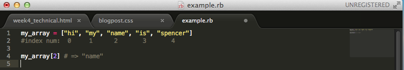
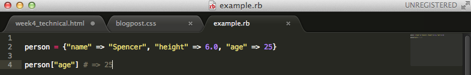

When you need to keep your data organized in Ruby, you'll often find yourself using Arrays and Hashes. Both Arrays and Hashes are indexed collections of object references. But which one is better, you might ask? The answer: it depends. Arrays and Hashes both have their own strengths and weaknesses -- the key is learning the situations in which you should use an Array over a Hash, and vice versa.
ARRAYS
I mentioned above that both Arrays and Hashes are indexed collections of object references. The way they are indexed, however, differs. An array is indexed with integers. This means, each value in an array has a corresponding index that is a number. So, the first item in the array has an index of 0 (we start counting at 0, not 1), the second item in an array has an index of 1, and so on. If we want to get the 3rd item in an array, we just type array[2] (remember that we start counting at 0, so '2' would be the third element). Check out the example below:
In addition, arrays, like hashes, can hold objects of differing types. So we could have a string, an integer, and a boolean all in the same array. Finally, arrays are ordered, e.g. if you print out an array it will print in the order of the numbered indices.
HASHES
Unlike Arrays, Hashes can be indexed with any object. We call the index for a hash a "key". The main idea behind hashes is that you have a collection of key/value pairs. So, for instance, we could create a hash that keeps track of a person's name, height, and age, and we can index them using the strings "name", "height, and "age" (which we call keys), whereas an array would just store the values in indices of 0, 1, and 2. Check out the exmaple below:
As explained above, both arrays and hashes can hold objects of differing types. Hashes, however, are not ordered like arrays are; if you print out a hash it will not print in any specific order. Instead, think of hashes as an unordered group of key/value pairs.
SUMMARY
To sum everything up, you generally want to use arrays when numberd keys will work just fine, and you want your data to be ordered. On the other hand, hashes will be the better option if you want to attach specific, differing keys to the values in your ordered list, such as in the 'person' example above. Hope this helps!